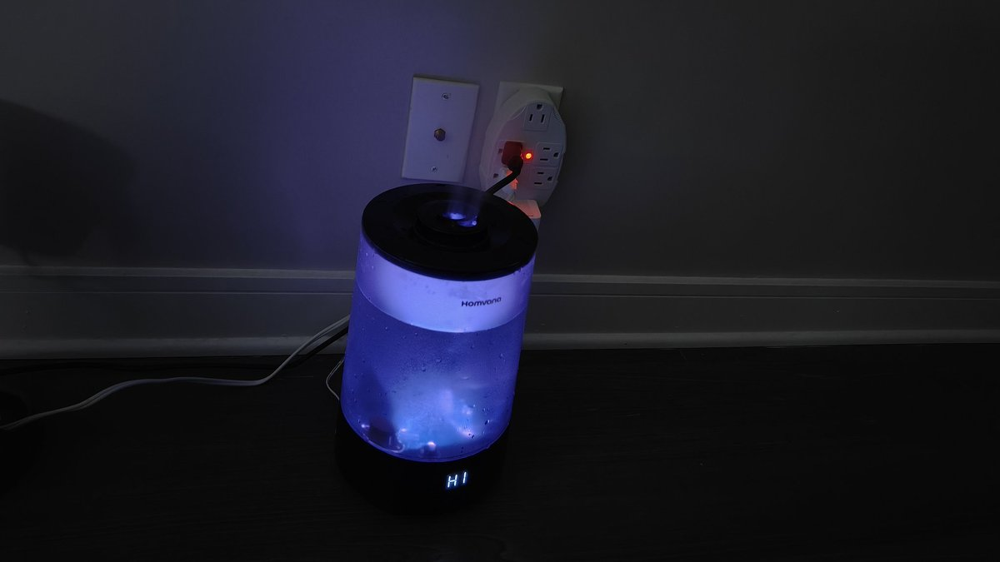

小虚空🍥
@tokerumaisurii
@RoachNyaNya 感觉有时候这些公司真是这么息事宁人，有次我Instacart东西重量有问题和receipt差很多，私信问司机又说他那边没问题还主动建议我找平台，然后我就app里面走反馈流程，结果app直接问要不要选择不需要反馈直接拿到这件商品全额退款（进账户），难道他们客服核查成本很高……？

偏指
@RoachNyaNya
旧加湿器坏了，试着给他们公司的support邮件发了问下，然后他们给了我个新的😃 https://t.co/0yxOYGJezK